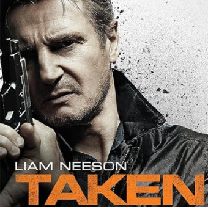

Taken
A former CIA operative uses his set of skills to rescue his daughter after she’s kidnapped in Paris.
Here are two of my all-time favorite movies.
A former CIA operative uses his set of skills to rescue his daughter after she’s kidnapped in Paris.
Earth’s mightiest heroes must come together and learn to fight as a team if they’re going to stop the mischievous Loki and his alien army.